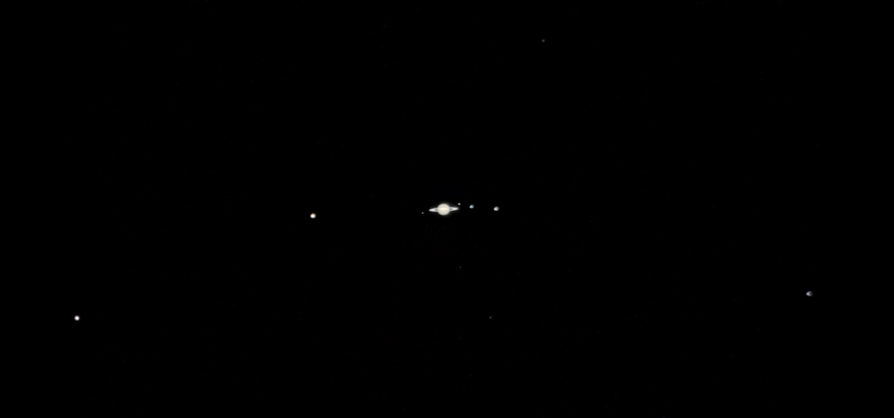
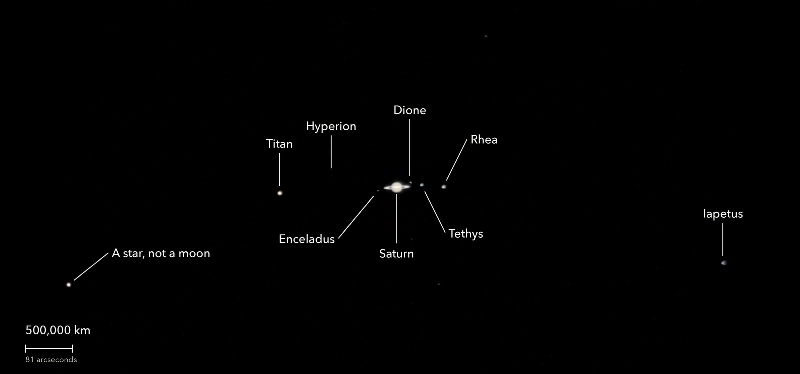
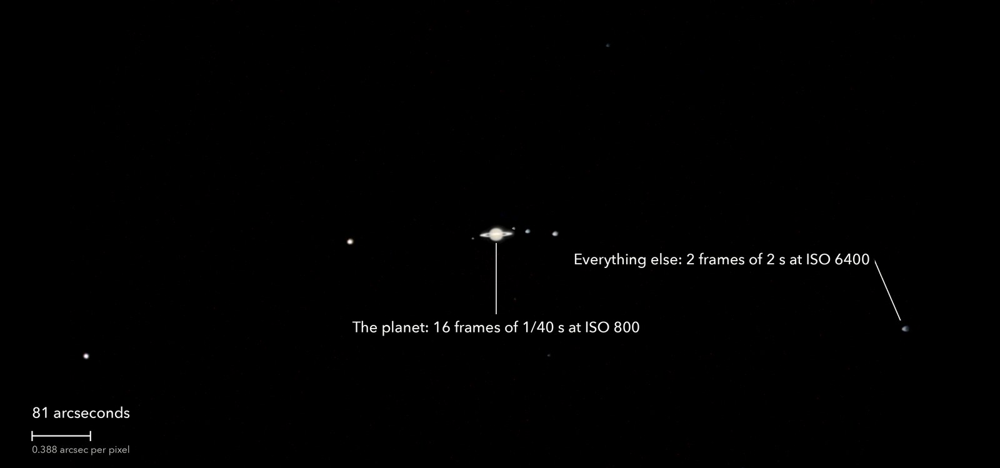

Saturn and seven of its moons
At opposition, 4 October 2026
Saturn at its closest and brightest for the year, its rings tilted only a few degrees toward us. Every labelled point is a moon. Titan, the big one, is larger than the planet Mercury.
What you are looking at

Swipe sideways to see the rest. Tap the picture for full size.
- Distance
- 1.27 billion km
- Light took
- About 70 minutes to get here
- The rings
- 270,000 km tip to tip: 70 percent of the way from Earth to the Moon
- Honest note
- The three inner moons are named from how they moved between frames
For photographers
Two exposures in one picture: 1/40 s for the planet, 2 s for the moons.

Swipe sideways to see the rest. Tap the picture for full size.
- Exposures
- Planet: 1/40 s at ISO 800. Moons: 2 s at ISO 6400, 640 times the planet's exposure
- Frames
- Planet: 61 taken, 48 usable, the 16 sharpest kept. Moons: 2 clear frames; the other ten were behind cloud
- Planet stack
- Each RAW colour plane placed at its own sub-pixel offset on a grid 3 x finer than the sensor (0.129 arcsec). No demosaic. Colours re-registered for the air's prism effect. Shown here at the sensor's scale, not enlarged
- Restoration
- Blur measured from Titan in the same frames: 2.7 x 2.2 arcsec (5.0 x 4.0 before the refocus). Richardson-Lucy, 8 rounds; stopped where a model planet starts to grow a false rim
- Composite
- The planet is set into the moon field where the 2 s frames are blown out. The planet's glare is subtracted ring by ring. Moons are lifted about 640 x relative to the planet
- Sampling
- Field: 0.388 arcsec per pixel, north up (9 catalogue stars, 0.6 arcsec)
- When
- 4 October 2026, after midnight, over 19 minutes. 52 degrees up, at opposition
- Moon names
- No ephemeris used: each point keeps its place beside Saturn while the stars slide past, and sits at its orbit's reach. Worth a check
- Not seen
- The Cassini division: no dip along the ring line in the plain stack or the restored one
- Telescope
- Celestron 8SE Schmidt-Cassegrain with dew shield: 203 mm aperture, 2,084 mm focal length (measured by plate solve), f/10.3
- Camera
- Sony a6000, stock, at prime focus: APS-C 23.5 x 15.6 mm, 6000 x 4000, 3.9 micron pixels, RAW
- Mount
- Sky-Watcher EQ6-R, unguided. Set down 27 degrees off the pole; both axes driven from a pointing model fitted to plate solves. Residual drift about 0.1 arcsec per second
© 2026 Brad Gessler · Celestron 8SE (8 inch, 2,080 mm) and Sony a6000 on an EQ6-R · San Francisco Bay Area · 4 October 2026
Capture and mount: Observatory (Elixir on a Raspberry Pi 3). Stacking: numpy, OpenCV, rawpy. Plate solving: astrometry.net. Stacked from the camera's RAW frames. Nothing generated.
© 2026 Brad Gessler. The pictures and the words are his own; all rights reserved.